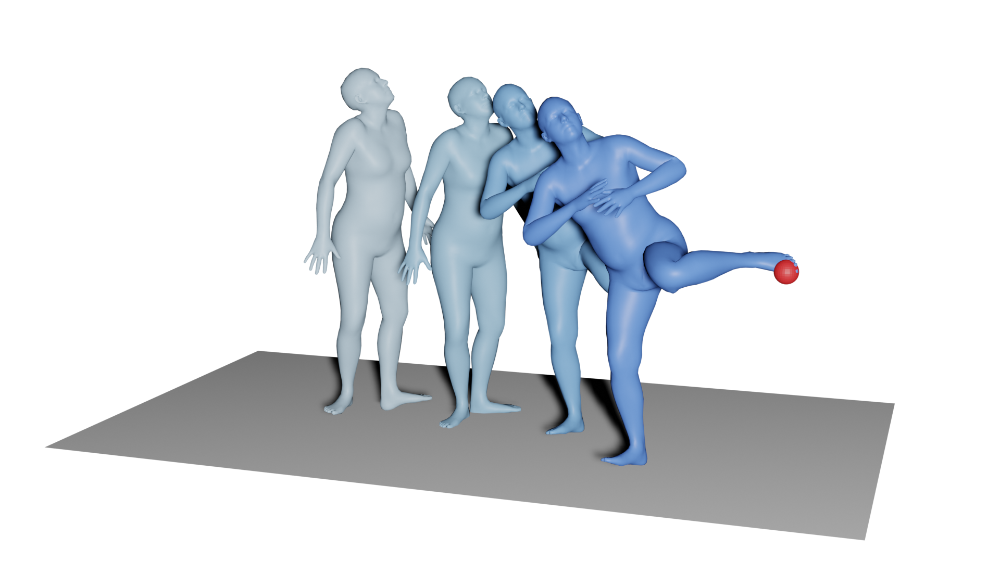
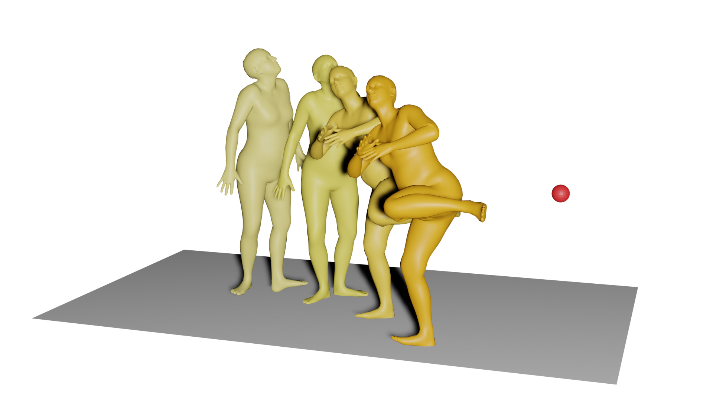
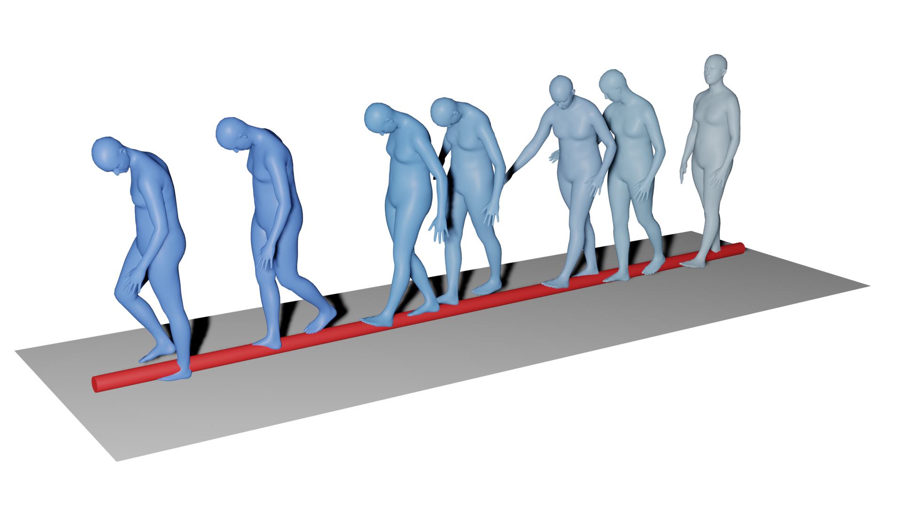
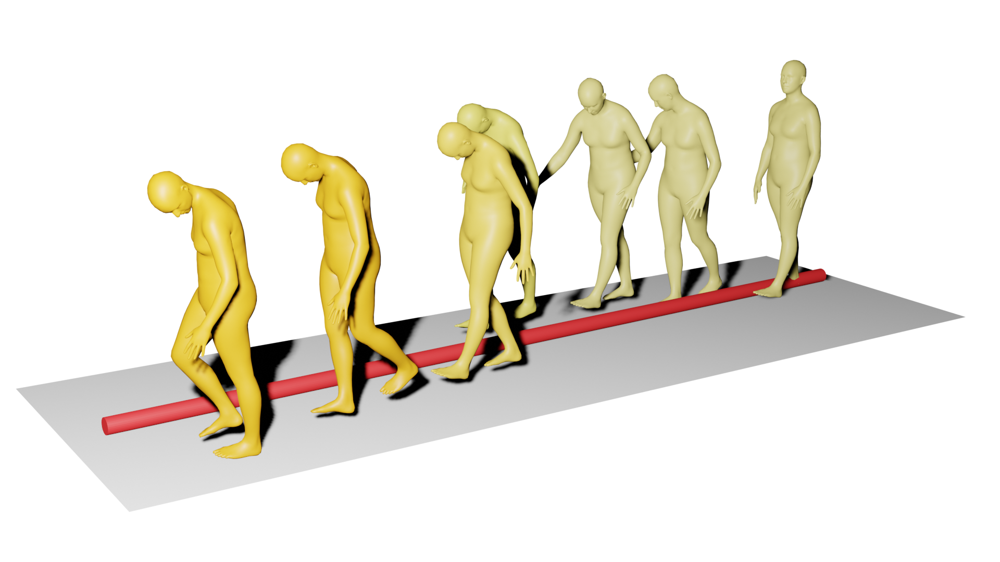

We recommend using Chrome for the best experience. Videos might not work on Safari.
Exploring-Diffusion-Model-Structure-Through-Different-Spectral-Regime-Analysis
Unconditional Generations
We show examples of unconditional generations.
   